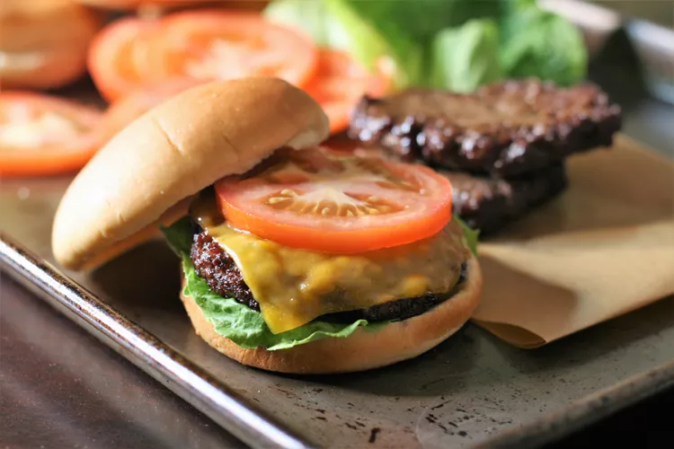

Air Fryer Hamburgers

Description of recipe
Again, I don't really cook, but who doesn't love a good burger?!
Ingredients
- One pound 80% lean ground beef
- Two tablespoons melted butter
- One tablespoon beef base
- Freshly ground black pepper
Steps
- Preheat an air fryer to 400 degrees F (195 degrees C)
- Form beef into 4 patties, approximately 3/4 inches thick and 4 1/2 inches in diameter. Make the patties slightly bigger than the buns to allow for shrinkage
- Whisk together warm melted butter and beef soup base in a small bowl. Brush lightly onto both sides of patties and season with pepper. Set patties into the air fryer basket. Depending on the size of your air fryer, you may need to cook them in batches
- Air-fry patties for 7 minutes, flipping halfway through, for medium doneness. For well done, air-fry for an additional 2 minutes